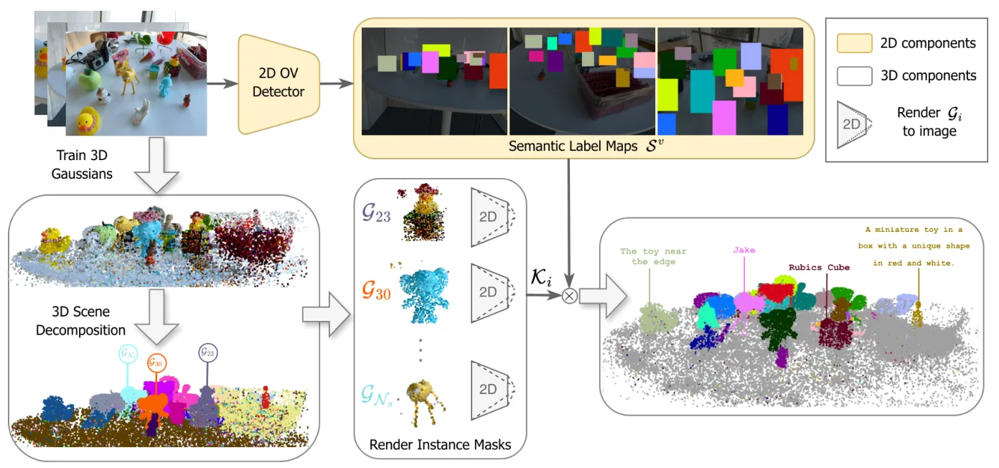
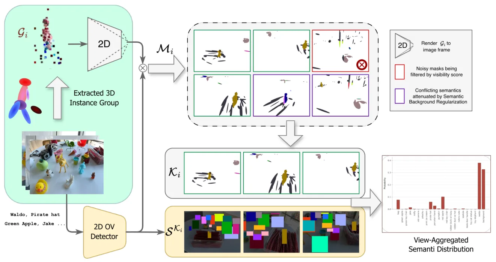

使用 2D 检测器的 3D Gaussian 开放词表与指代表达分割Open-Vocabulary and Referring Segmentation for 3D Gaussians Using 2D Detectors
与语义地图、3DGS、开放词表分割和指代 grounding 相关；可作为 semantic SLAM 后端语义层的参考。
一句话工作总结
GaussDet 用多视角 2D 检测投票给 3D Gaussian 实例赋语义，适合语义 3DGS 地图和开放词表机器人场景理解。
摘要
3D Gaussian Splatting 需要语言驱动的开放词表理解来支持 embodied AI 等应用。现有方法常把 CLIP dense features 蒸馏到场景表示中，但实例分组依赖预设实例数或 bottom-up grouping，且 CLIP 对复杂空间推理和指代表达能力有限。GaussDet 改用离散的开放词表 2D detector 和 referring expression detector：先为每个 Gaussian 学习 instance features 并分解出 3D instance groups，再渲染这些组，从多视角 2D detections 中聚合语义投票，得到 View-Aggregated Semantic Label Distribution。该策略可正则化噪声实例分组，并实现从简单名词到复杂指代 grounding 的 zero-shot 扩展。
3D Gaussian Splatting (3DGS) has emerged at the forefront of 3D scene reconstruction. Extending 3DGS with language-driven, open-vocabulary understanding has gained significant attention for real-world applications such as embodied AI. Recent methods achieve this by learning an instance feature attribute and assigning semantics by distilling high-dimensional Contrastive Language-Image Pretraining (CLIP) features directly into the scene representation. However, the instance grouping mechanisms of these methods either require a predefined number of instances or suffer from noise in their bottom-up grouping strategies. Furthermore, the reliance on CLIP restricts semantic understanding to simple noun phrases, preventing complex spatial reasoning and referential expression grounding. We present GaussDet, a method that circumvents the need for dense CLIP features by leveraging discrete, open-vocabulary 2D object detectors with referring expression capabilities. We learn instance features for individual Gaussians to decompose the scene into 3D instance groups. By rendering these groups and aggregating semantic votes from multi-view 2D detections, we generate a robust View-Aggregated Semantic Label Distribution (VASD) for each 3D instance. This view-aggregation strategy acts as a strong regularizer, attenuating spurious labels caused by low-quality instance grouping. Our approach enables a straightforward, zero-shot extension from simple language queries to complex referential grounding. Extensive evaluations across two key tasks -- open-vocabulary segmentation (LeRF-OVS, ScanNet) and referring expression grounding (Ref-LeRF) -- demonstrate that GaussDet achieves consistent improvements over existing methods. Most notably, we achieve a substantial 16.7% mIoU improvement in referential grounding within a strict zero-shot setting.
中文解读摘录
- 为什么看：语义 3DGS/语义地图需要开放词表和复杂指代 grounding；GaussDet 试图绕开 CLIP dense feature 蒸馏的噪声与表达能力限制。
- 方法要点：为 Gaussians 学习 instance features，渲染实例组后从多视角 2D open-vocabulary/referring detectors 聚合语义投票，形成 View-Aggregated Semantic Label Distribution。
- 结果信号：在 open-vocabulary segmentation 和 referring expression grounding 上优于现有方法，尤其 zero-shot referential grounding mIoU 提升 16.7%。
- 跟踪建议：如果做 semantic SLAM/3DGS map，可关注它的 instance grouping 稳定性、多视角投票对遮挡/小物体的鲁棒性，以及无需 CLIP dense features 的工程收益。
- 链接：abs · PDF
图表/页面预览

{kind=link}

{kind=link}
